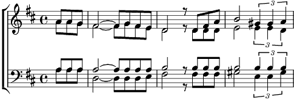

1. Ce n'est pas rien que de partir
On en revient sage ou héros
Se dépasser ou bien mourir
Tu peux toujours laisser ta peau
Fichu moteur qui te balance
Entre le vide et le zéro
Petit bonheur, bonheur la chance
On est mendiant sous les bravos
Refrain:
Y tout y a tout qui décolle
Le temps, les amis
L'avion caracole un bout d'infini
Ou... les fleurs du moment
Ou... on est survivant
2. Sous les drapeaux de la cantine
Les tables en chœur sont invitées
Et le fumet dans les cuisines
A du meilleur pour la verrée
Le président loupe une estrade
Et son lorgnon n'est pas content
Mais les serveuses ont la parade,
Voici le plat des ortolans
Refrain
3. Et ça repart comme une hélice
Comme une hélice
A plein régime
A grand ciel bleu
Heureux celui qui comme Ulysse
A navigué sans un adieu
Le fou volant dans la lumière
Il est un ange, il est un dieu
Ce n'est jamais pour la dernière
Qu'on a l'orage au fond des yeux
Coda:
Y a tout qui décolle
Le temps, les amis
Adieu la boussole
Il est reparti
Y a tout oui décolle
Il est reparti